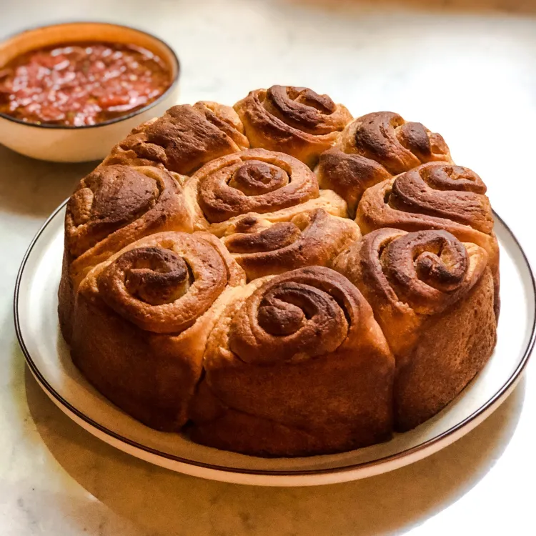

Kubaneh is a popular Yemeni-Jewish bread consisting of flour, sugar, salt, and butter. It is traditionally served warm for breakfast. The bread comes in two varieties: folded (the dough is shaped into balls, combined with butter, and rolled in a spiral) and monkey bread (balls of dough are dipped in butter and placed in the pan).
Meal prep time : 4 hours 15 minutes
Servings : 16